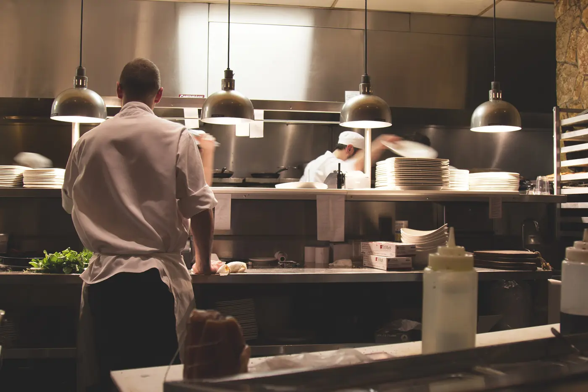
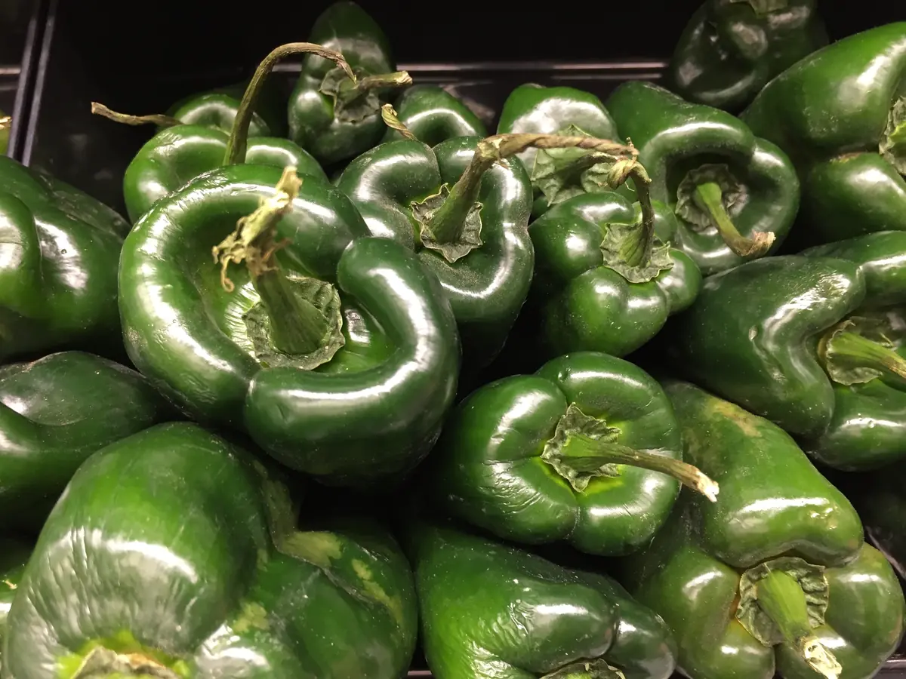
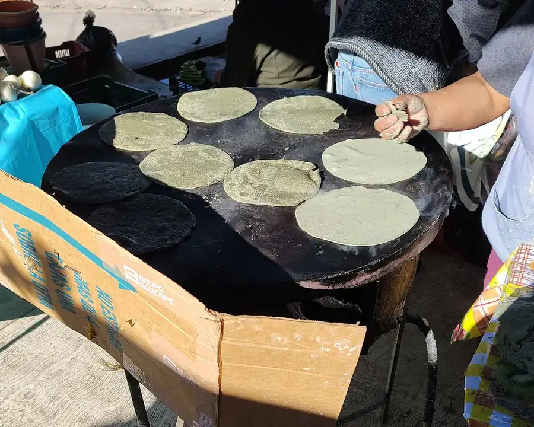
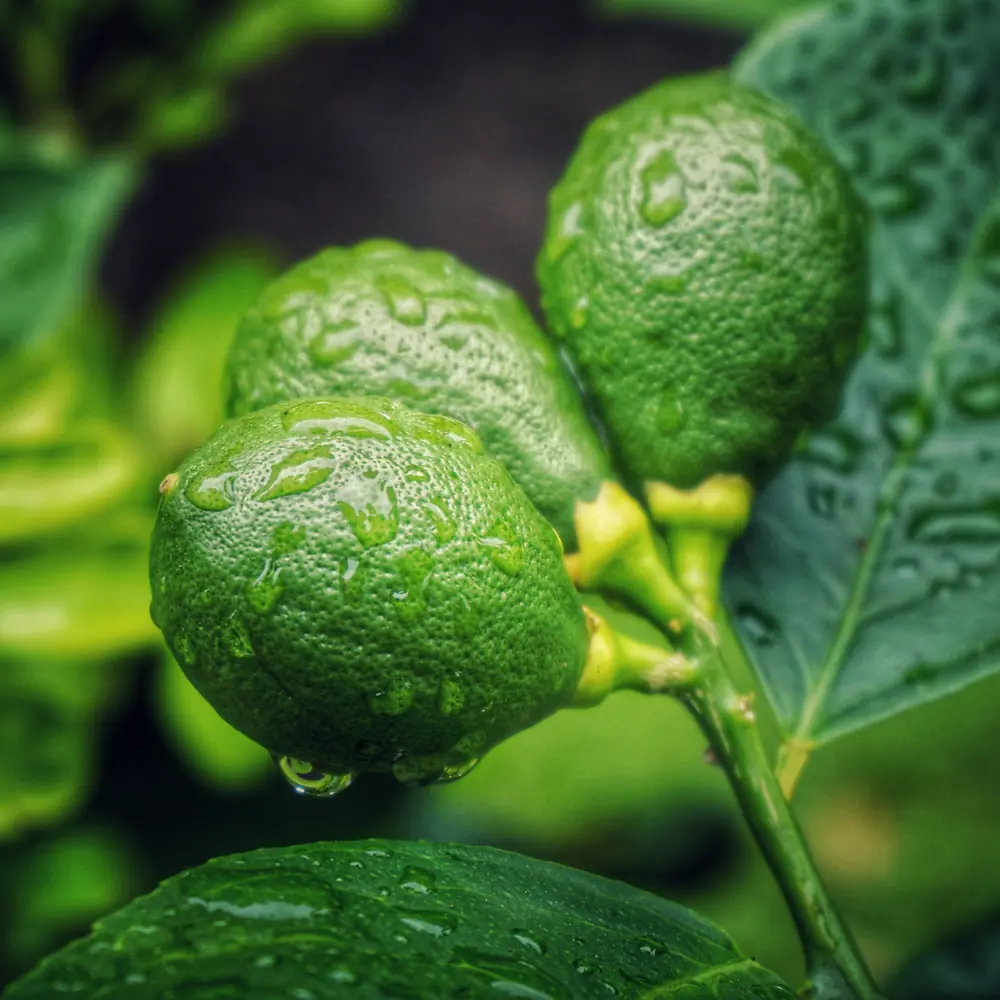
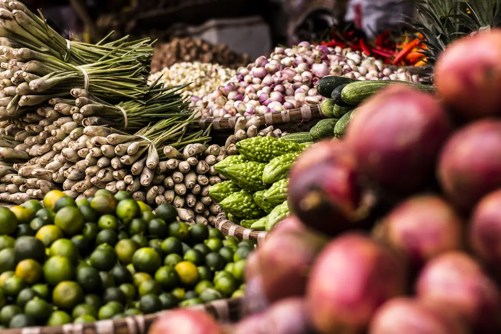
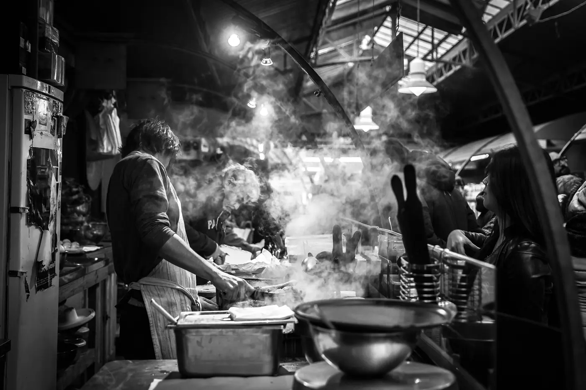

Our story
The name comes from a corn mill. Molina was my grandmother’s family, and the molino was the centre of her street.
Sample footage standing in for the AI video in this plan.
From Rosa’s molino to Main Street.
Fifty-some years, two countries and one pot of mole that has never really stopped cooking.
-
1968Tlacolula, Oaxaca
Rosa’s molino
Rosa Molina runs the corn mill on her street. Every morning the neighbours bring their nixtamal to grind into masa, and she cooks for whoever is waiting.

-
1994Oklahoma City
Javier comes north
Her son Javier moves to Oklahoma and cooks on the line in other people’s kitchens for fifteen years, saving for his own.

-
2009300 W Main St
Twelve tables on Main Street
Javier and Lupe open Casa Molina in an old storefront downtown. Lupe runs the floor; Rosa’s mole negro is on the first menu.

-
2016The bar
Ana builds the mezcal bar
Their daughter Ana spends a summer visiting palenques around Oaxaca and comes back with six families to buy from. They are still the six on the shelf.

“My mother said a kitchen is only as good as its masa. So we still make ours every morning, before anything else.”
Javier Molina
Corn, chiles, limes and time.
Poblanos roasted for rellenos every morning, blue corn when we can get it, and a crate of limes a day at the bar.





Same recipes, a bigger kitchen.
Javier still opens the kitchen. Lupe still knows half the dining room by name. Ana runs the bar and the events room, and her brother Luis does the catering, from graduation taquizas to wedding dinners for two hundred.
We buy our produce from growers around Norman when we can, our corn from a mill in Texas that still nixtamalizes the old way, and our mezcal straight from the families who make it.